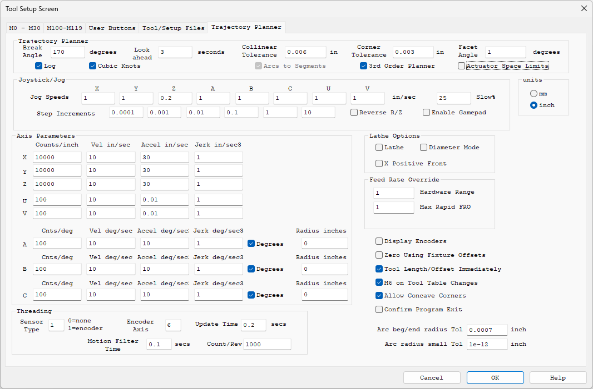
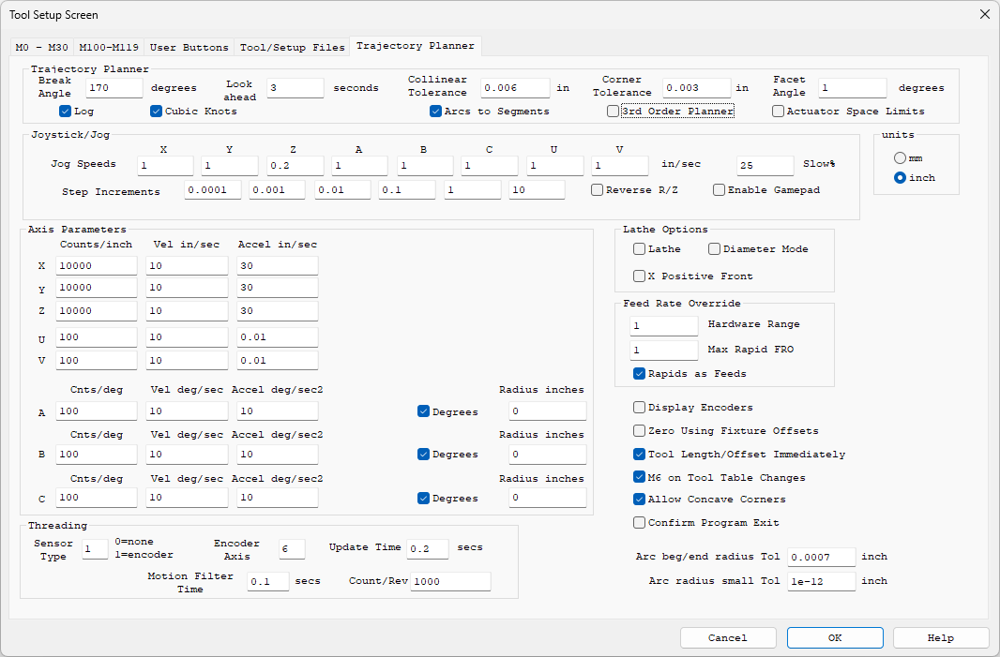
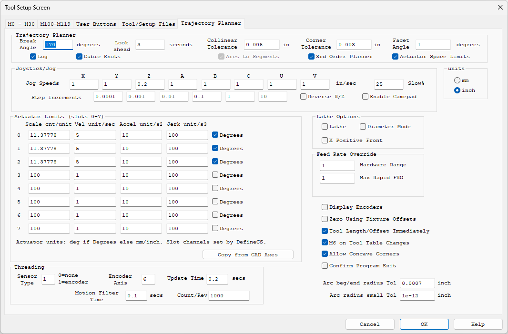
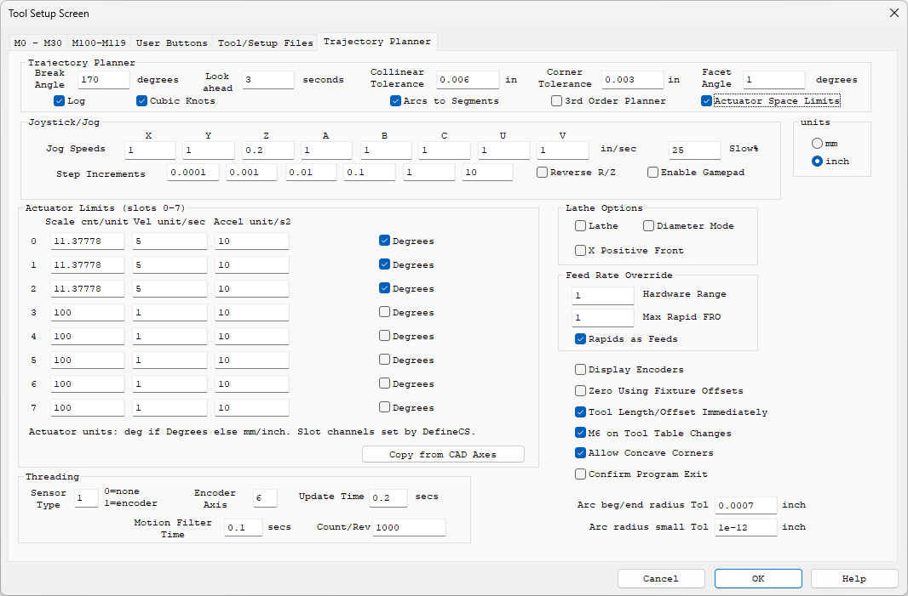

Tool Setup Screen - 3rd Order Trajectory Planner
KMotionCNC includes an optional 3rd Order (Jerk Limited) Trajectory Planner. It is selected with a single checkbox on the Tool Setup - Trajectory Planner Screen, and the standard planner remains the default. The same G Code and the same screens are used either way, so it is easy to try and easy to switch back.
Compared to the standard planner the 3rd Order Planner offers:
- Smoother motion - acceleration ramps up and down smoothly (limited "Jerk") instead of stepping. Every axis, including rotary axes, is kept within its own Velocity, Acceleration, and Jerk limits at all times. Less vibration and ringing means better surface finish and less wear and tear on the machine.
- Less dead time - Feeds and Rapids are planned as one continuous motion. Rapids blend into Feeds without stopping between moves, and corners are blended within your specified tolerance instead of stopping or crawling.
- Tolerance control from G Code - G64 Px sets the corner blending tolerance at any point in a program, without interrupting the motion. G61 (exact path) and G61.1 (exact stop) are also honored.
- Correct limits on complex machines - with Actuator Space Limits the planning is performed on the actual motors (through the Kinematics model), so 5 Axis heads, trunnions, and robots never ask a motor for more than it can do.
- Smoothest possible execution - the optional Cubic Knots mode has the controller follow the planned curve exactly on every servo cycle (requires updated KFLOP/Kogna firmware).
Enabling the 3rd Order Planner

Check 3rd Order Planner in the Trajectory Planner group. The screen then adapts:
- A Jerk column (in/sec3, mm/sec3, or deg/sec3) is added to the Axis Parameters so each axis has its own Jerk limit in addition to Velocity and Acceleration.
- Arcs to Segments is automatically selected and locked - the 3rd Order Planner always smooths arcs as part of the continuous stream, with the accuracy governed by the Collinear Tolerance.
- The Rapids as Feeds option disappears - Rapids always join the planned stream (they run as fast as the axis limits allow and blend with the Feeds around them).
For comparison, here is the same screen with the standard planner selected (the default):

Setting the Jerk Limits
Jerk limits how quickly the acceleration is allowed to change. A lower Jerk gives gentler, quieter motion; a higher Jerk gives crisper motion and allows corners to be taken faster within a given tolerance. A good starting point is a Jerk value of about 10 times the Acceleration value for each axis (for example Accel 30 in/sec2 and Jerk 300 in/sec3).
Note that the smoothing time window is shared by all the axes and is set by the softest axis (the largest Accel/Jerk ratio). One axis with a very low Jerk setting will slow cornering for the whole machine, so keep the Velocity/Acceleration/Jerk ratios comparable across the axes for best results.
Corners and Tolerance (G64 / G61 / G61.1)
With the 3rd Order Planner corners are handled automatically from the Corner Tolerance setting: the path is allowed to round off each corner by up to the tolerance so motion can continue smoothly through it. Corners too sharp to blend at a useful speed (such as full reversals) automatically take a clean stop and go instead. See Corner Rounding for the related Corner Tolerance and Facet Angle settings.
The tolerance can also be commanded from the G Code Program itself, without stopping the motion:
- G64 Px - blend corners within tolerance x (in current units) from this point on
- G64 - return to the Corner Tolerance configured on this screen
- G61 - exact path mode: the programmed path is followed exactly, with a stop at every change in direction
- G61.1 - exact stop mode: a complete stop at the end of every block
Cubic Knots
Normally motion is delivered to the controller as many short straight segments. With Cubic Knots selected the motion is instead delivered as smooth curves (cubics) which the controller evaluates exactly on every servo sample - velocity is perfectly continuous and curves have no faceting at all. This gives the smoothest possible execution of the planned motion.
Note: Cubic Knots requires the updated KFLOP or Kogna Firmware included with this release. If older Firmware is installed the Controller does not recognize the new commands: an "error, invalid command" message appears on the Console Screen and the program aborts with "GCode Aborted" - update the Firmware (KMotion.exe Config/Flash Screen - New Version).
Actuator Space Limits

On machines that use a Kinematics model (rotary head 5 Axis machines, trunnions, robots) the motion of the motors can be very different from the motion of the tool. A modest tool speed can demand a very high motor speed when working near a pivot. Normally axis limits are specified in CAD (tool) space, which cannot see this - so a program that looks fine can silently ask a motor for more speed or acceleration than it has.
Check Actuator Space Limits to specify the limits on the motors themselves. The Axis Parameters group becomes Actuator Limits with one row per actuator slot 0-7 (the outputs of the Kinematics model, in the same order as the channels defined by DefineCS):
- Scale cnt/unit - counts per unit for the actuator. Units are degrees if Degrees is checked for that slot, otherwise mm or inch per the units selection. When this mode is on, these Scales are what is used (the CAD axis Counts/inch values are ignored).
- Vel, Accel, Jerk - the actuator's own limits in its own units (the Jerk column appears with the 3rd Order Planner).
- Copy from CAD Axes - fills the table from the CAD Axis Parameters as a starting point.
The programmed Feed Rate still means the speed of the tool along the CAD path - the planner simply makes sure no motor is ever asked to exceed its own limits while achieving it. Jogging also benefits: on machines with Kinematics, jogs are planned as coordinated motion so the tool tracks the commanded direction exactly at any speed and decelerates on-path when the jog is released.
Actuator Space Limits works with the standard planner as well (Velocity and Acceleration limits, no Jerk column):

Log
The Log option records every planned motion segment to the file c:\Temp\TPSegLog.csv while a program (or a coordinated Jog) runs, with either planner. The MotionLogPlotter utility (MotionLogPlotter.exe in the KMotion\Release folder; source in PC VCS Examples\MotionLogPlotter) plots the log - the path in XY, plus Position, Velocity, Acceleration, and Jerk versus time with zoom - which is useful for verifying machine settings and diagnosing motion issues. With the 3rd Order Planner selected, Log also writes a text timeline of each run (waypoints, throttling, downloads) to c:\Temp\TP3_Timeline.log. The c:\Temp folder is created if it does not exist. Leave Log unchecked for normal use.
Notes
- Feed Hold, Feed Rate Override, and Rigid Tapping all work as before with the 3rd Order Planner.
- Motion is planned continuously with a fixed lookahead and bounded memory, so long programs stream without pre-processing delays.
- If Windows stalls while a program is streaming, the controller ramps smoothly to a clean, controlled stop on the programmed path and resumes when data flow returns.